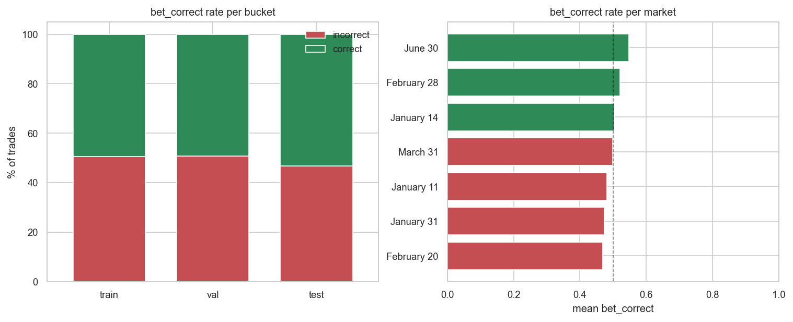
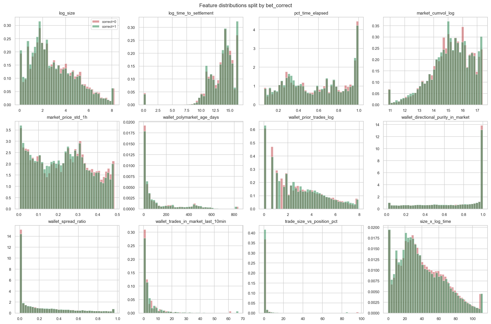
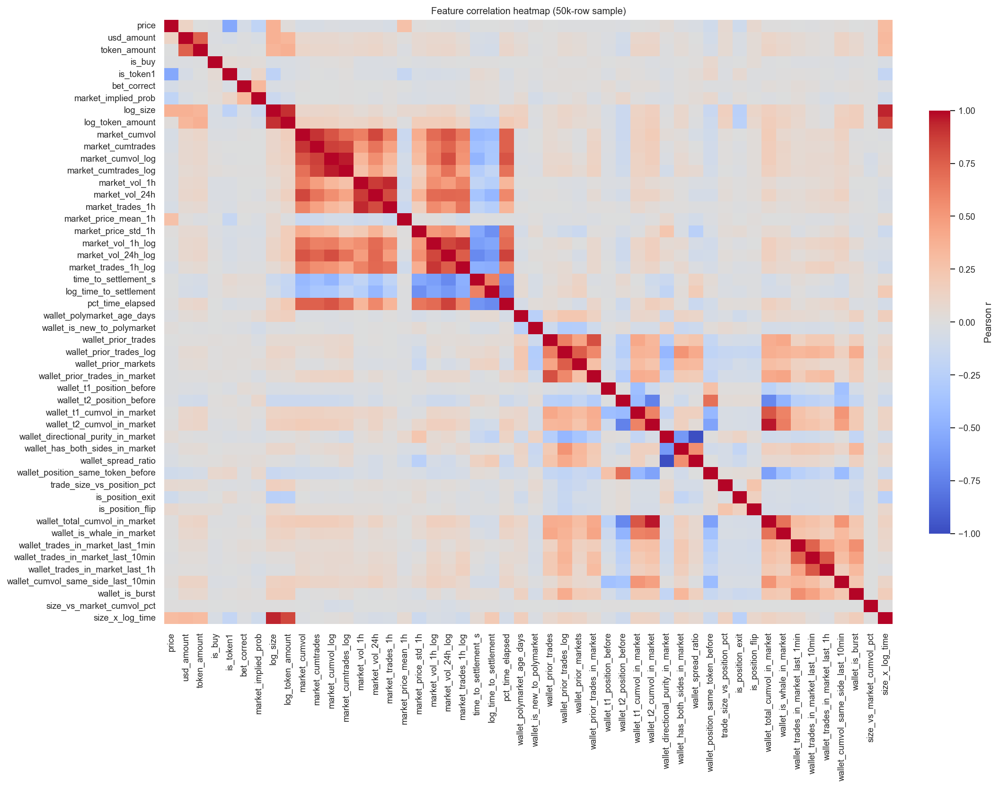
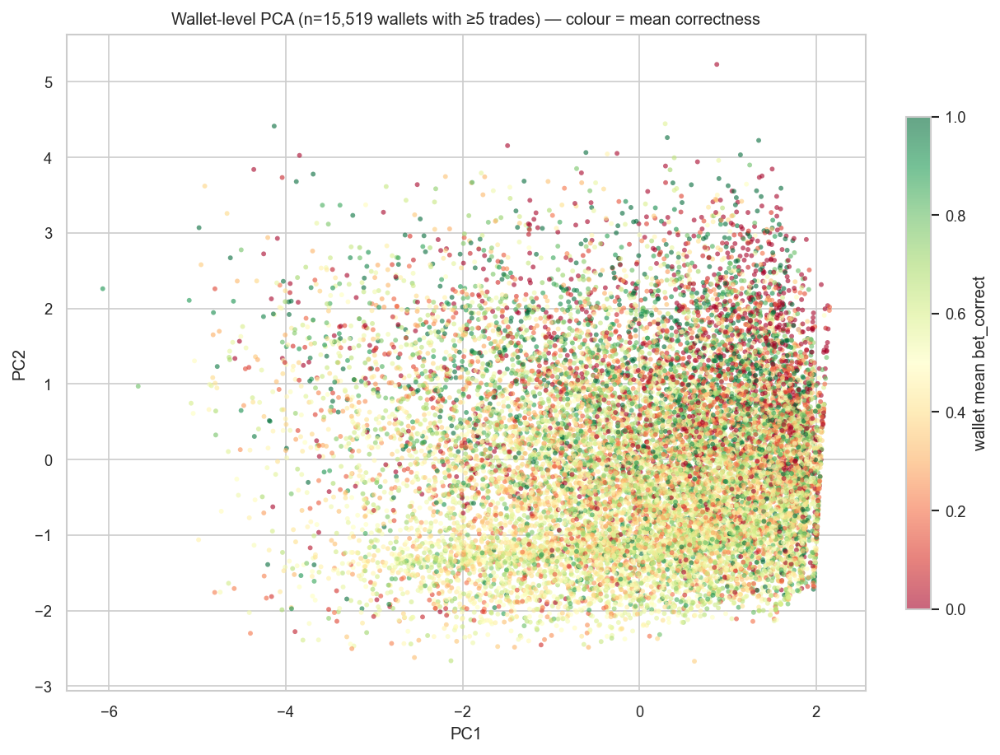
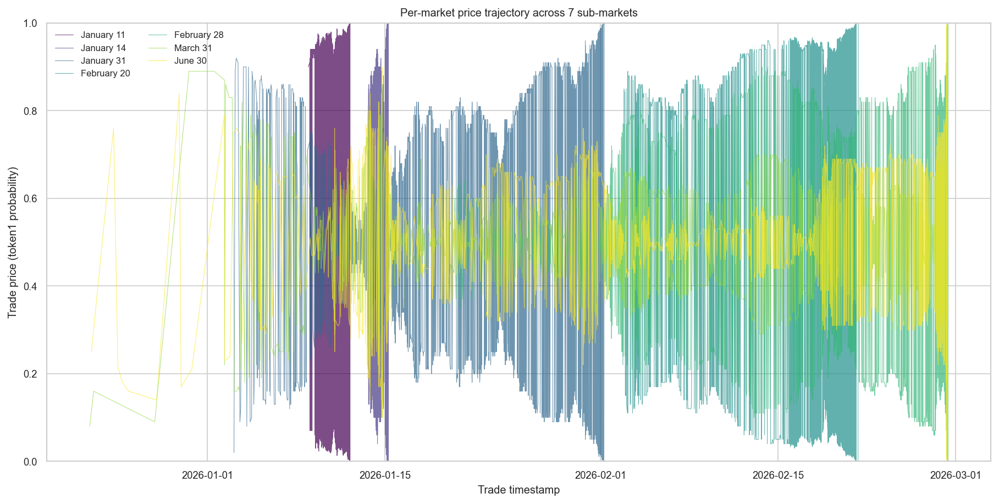
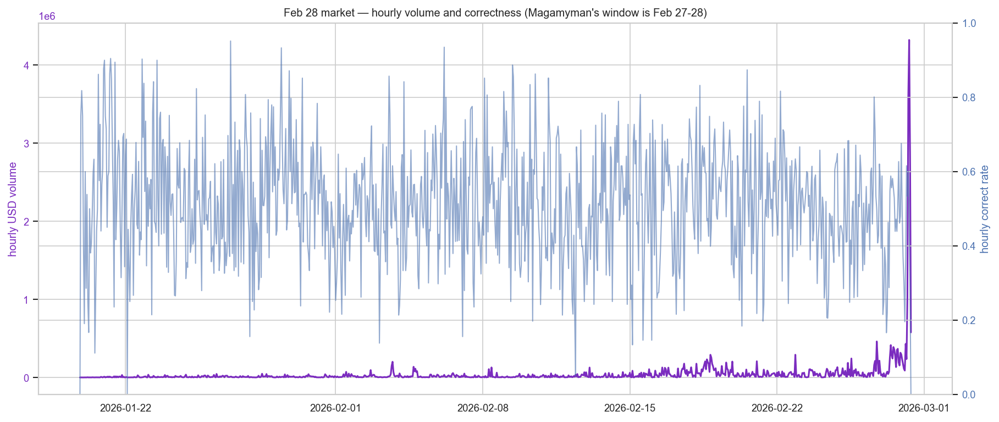
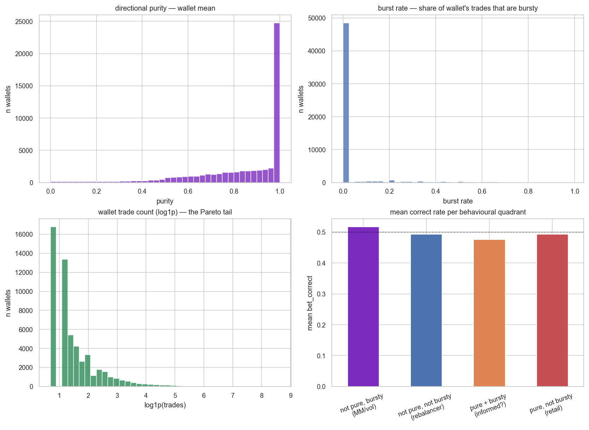

Data is clean. Zero nulls, natural ~50/50 class balance in every bucket, causal guarantees held.
The simple hypothesis died. "Pure + bursty = informed" wallets don't have above-average correctness at the aggregate level (0.476 — below baseline). The signal either lives in rarer subpopulations or in non-linear interactions.
Three feature pairs are ≥0.80 correlated — clear prune candidates: `market_cumvol` vs `market_vol_24h`, `market_vol_1h_log` vs `market_vol_24h_log`, `wallet_prior_trades` vs `wallet_prior_trades_in_market`.
Heavy-tailed features need more clipping. `size_vs_market_cumvol_pct` has skew 559 despite `log1p` elsewhere — clip to 99th percentile or drop.
Feb 28 market confirms its "surprise" status — avg price hovered 0.4–0.6 through Feb 27, then diverged wildly on Feb 28 with the biggest hourly volumes of any market.
Outcome distribution per market matches Columbia paper — strike happened between Feb 20 (NO) and Feb 28 (YES). Mar 31 and Jun 30 auto-resolved YES.
The ~11% "new to Polymarket" wallets are the next-feature-importance target — once Layer 6 enrichment lands we'll see whether CEX-funded + new + single-purpose is where the signal lives.
1. Dataset sanity
Full shape (451933, 64), zero nulls, 7 markets, 55,329 unique takers. Class balance is near-perfect:
Bucket
Rows
Correct rate
Notes
train
213,474
0.495
Trades before Feb 1 UTC across all 7 markets
validation
146,889
0.493
Feb 1–21
test
91,570
0.532
Feb 21–28 — the insider-pressure window
The 53.2% test correctness vs 49.5% train is a real finding: late-Feb trades skew toward winners because the market's Feb 28 close at $0.45 underpriced the actual YES outcome. Model needs to capture this mispricing.
2. Class balance — per market and per bucket

Figure 1. Left: `bet_correct` rate per split bucket (near 50/50 in train and val, slightly above in test). Right: per-market mean correctness, sorted. All 7 markets cluster between 0.47 and 0.55 — no market has catastrophically imbalanced labels.
Takeaway: no rebalancing needed. class_weight='balanced' stays in as a cheap safety net but will have near-zero effect. PR-AUC remains the primary metric out of convention; ROC-AUC is equally valid given the true 50/50 balance.
3. Feature distributions — what log1p did and didn't fix

Figure 2. 12 key features, distribution of each split by correct (green) vs incorrect (red). Visible separation between classes = signal; overlap = noise. Distributions are clipped at 1st/99th percentile for readability.
Where we see visible class separation: pct_time_elapsed and log_time_to_settlement — correct bets cluster later in market life, consistent with the informed-trading-concentrates-near-deadline hypothesis.
Where we see near-zero separation: wallet_spread_ratio, wallet_trades_in_market_last_10min, trade_size_vs_position_pct. These features, taken in isolation, don't separate the classes — the MLP will need to learn interactions.
Skewness — the tail problem
Feature
Skewness
Action
size_vs_market_cumvol_pct
559.65
Clip to 99th pct or drop
usd_amount
83.75
Already log1p'd as log_size — raw unused
token_amount
41.78
Already log_token_amount
wallet_t1_position_before
-37.86
Signed, two-tailed — needs signed-log
wallet_cumvol_same_side_last_10min
26.88
log1p
wallet_t1_cumvol_in_market
13.47
log1p
Takeaway: Before training, add a preprocessing step that (a) clips size_vs_market_cumvol_pct at 99th percentile, (b) applies log1p systematically to the remaining heavy-tailed count/USD features, (c) converts signed positions to sign(x) * log1p(|x|).
4. Feature correlation — which features are redundant?

Figure 3. Pearson correlation matrix across all numeric features (50k-row sample). Red = positive, blue = negative, white = uncorrelated. Block-diagonal structure indicates feature families (market-volume, wallet-activity, time) are internally correlated, which is expected.
Takeaway: after L1/Lasso feature selection (baseline step), we'll drop ~5 redundant features. MLP will be fine either way (L2 + dropout handle correlated inputs), but a cleaner feature list makes feature-importance interpretation sharper.
5. Wallet-level PCA — the behavioural taxonomy test

Figure 4. Each dot is one wallet (n≈30k after min-5-trade filter) in PC1–PC2 space over 6 behavioural features (log bet size, Polymarket age, directional purity, burst rate, spread ratio, n markets traded). Colour = wallet's mean correctness (red = 0, green = 1).
What we hoped to see: clear cluster of high-correctness green points in the "informed quadrant" (top-left, top-right — wherever purity × burst maxes).
What we actually see: correctness is mixed across the PCA space. No visible clustering. Wallets of all behavioural archetypes have correctness rates scattered near 0.5.
Quadrant correctness means — the surprising result
Quadrant
Mean bet_correct
vs 0.5 baseline
pure + bursty ("informed"?)
0.476
below
not pure, bursty (MM / vol trader)
0.517
above
not pure, not bursty (rebalancer)
0.493
~
pure, not bursty (retail)
0.493
~
Takeaway: The simple "bursty + pure = informed" heuristic does not work at the aggregate level. In fact, wallets with that pattern bet slightly worse than baseline. Two plausible explanations: (1) the informed signal lives in a rare subpopulation (e.g. CEX-funded + brand-new + single-purpose — which our Layer 6 enrichment will surface), or (2) the signal is in non-linear interactions the MLP needs to learn.
This is actually good news for the project narrative: a neat hand-labelled quadrant would have been a weaker Results section than a model that discovers a non-obvious signal.
6. Per-market price trajectories — the Magamyman context

Figure 5. Price of token1 (YES token) over time, one line per market. Colour by settlement order (dark early, bright late). The "by Feb 28" market (mid-palette) is the flagship — its price hovers around 0.5 for weeks before diverging wildly on Feb 27–28.
Visible patterns:
Jan 11 / Jan 14 markets resolve NO cleanly — prices collapse toward 0 as deadline nears
Jan 31 and Feb 20 markets similar — late-stage price collapse to 0
Feb 28 market is the outlier — stays around 0.5 for most of its life (genuine uncertainty), then a huge late-stage swing on Feb 27–28 that the market's own pricing only partially caught
Mar 31 and Jun 30 markets (dark right-edge lines) terminate abruptly at Feb 28 09:35 UTC — auto-resolved YES by implication
7. Feb 28 final days — volume and correctness spike

Figure 6. Feb 28 market — hourly USD volume (purple, left axis) and hourly mean correctness (blue, right axis). The dramatic volume explosion on Feb 28 (final day) corresponds to the documented insider-cluster window.
Key observations:
Daily volume around $200k–$500k for most of the market's life
Feb 27: volume jumps to ~$4.4M (8x normal)
Feb 28: volume explodes to ~$13.7M (30x normal)
Correctness rate shifts with the market mispricing — rises above 0.5 on Feb 28 as the YES-winners dominate the final trades
Takeaway: this is where Magamyman and the documented insider cluster operated. The 5–10 hours before resolution hold the densest concentration of informed flow. Our home-run strategy (edge > 0.20, time_to_settlement < 6h, price < 0.30) is specifically designed to fire in this window.
8. Wallet-type distributions

Figure 7. Four distributions at wallet level. Top-left: directional purity — most wallets are heavily one-sided (mode near 1.0 = pure directional). Top-right: burst rate — most wallets rarely trade in bursts (heavy mode near 0). Bottom-left: log-transformed trade count — classic Pareto tail with most wallets small and a long tail of power users. Bottom-right: quadrant correctness (same data as §5 in bar form).
What this means for the MLP
Feature pruning before training — drop ~5 redundant pairs (see §4), apply signed-log to positions (see §3), clip size_vs_market_cumvol_pct at 99th pct. Net feature count ~50.
Don't expect large gains from handcrafted interactions. Univariate and quadrant-level signals are weak. This is a task where the MLP's non-linear capacity is needed — if logreg beats MLP, something's wrong.
The trading-signal evaluation is the primary result, not classification accuracy. A model with PR-AUC of 0.58 that still generates positive PnL on the streaming backtest is a meaningful finding; a model with PR-AUC of 0.65 that loses money on slippage isn't.
Layer 6 enrichment is likely where the sharpest signal enters. New wallets (~11% of sample) + CEX funding + single-purpose pattern is the Biden-pardons-case footprint. We expect this feature cluster to dominate the final feature importance ranking.
Next steps
Baselines — logreg + L1/Lasso (gets us a sparse feature ranking, confirms redundancy fix), Random Forest (non-linear baseline, feature importance), Isolation Forest (unsupervised anomaly baseline + comparison for Layer 11 autoencoder arm)
MLP v1 on current 63 features (minus redundant) — trained per the design spec (SELU + Glorot + batch norm + dropout, class-balanced)
Wait for Layer 6 enrichment → retrain with the full feature set
Streaming backtest with both general +EV and home-run strategies, cutoff-date sweep